In addition to traditional teaching and lecturing, I like to emphasize student-centered learning and teaching in my classroom. When students can explain concepts and ideas to each other, they demonstrate that they have internalized the ideas well. When appropriate, I like to have students come and do problems and exercises on the board and explain it to each other.
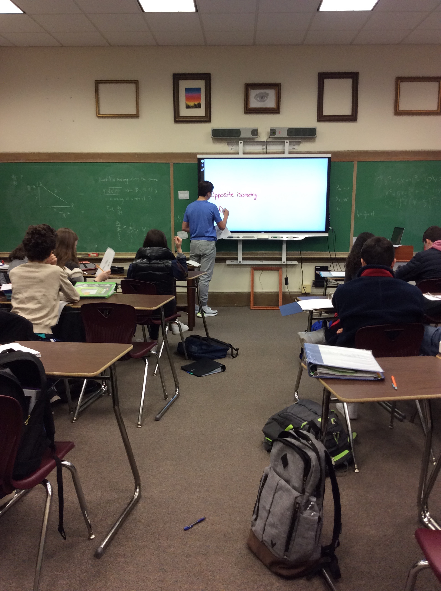 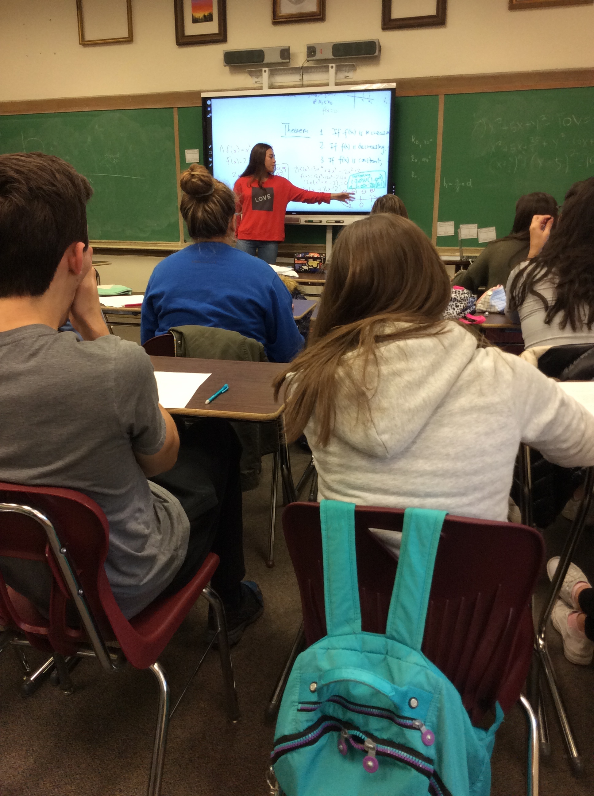
Group Work and Collaboration (Introductory Engineering)[2019]
I encourage students to work in groups when they solve problems. This allows them to listen well and collaborate with each other. This is an important skill they will need when they work in a job and the classroom is a good setting to begin developing those habits.
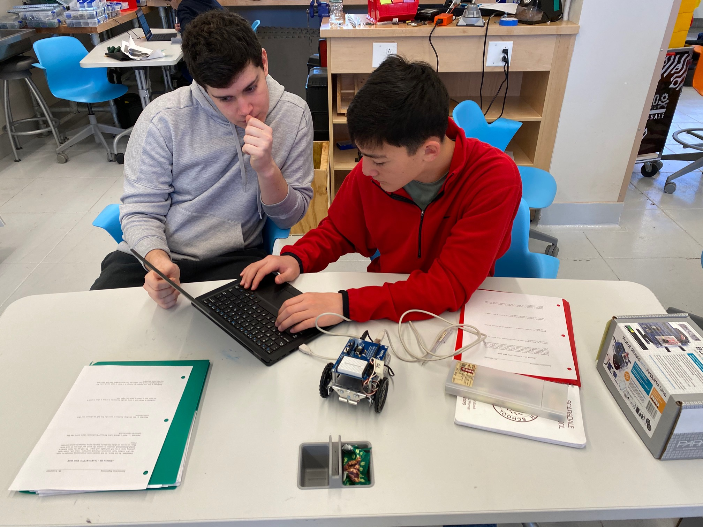 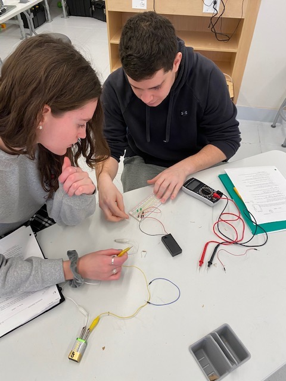
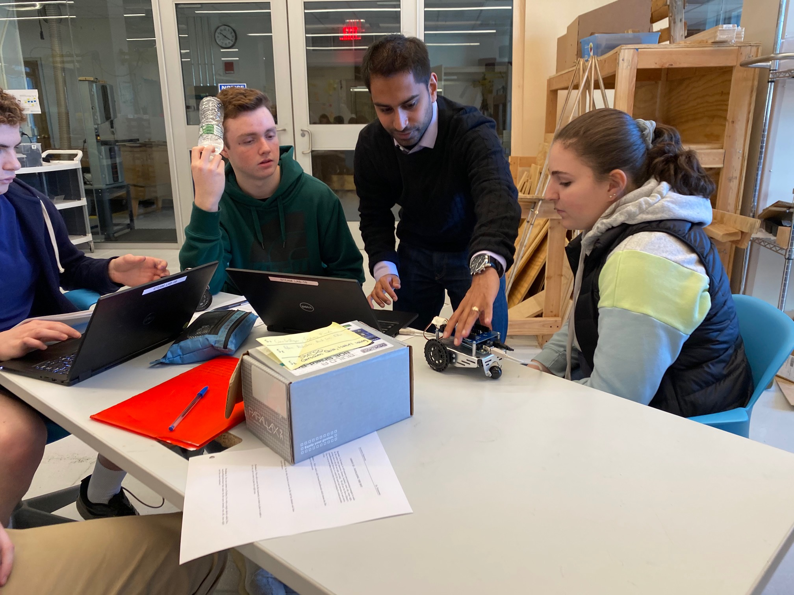 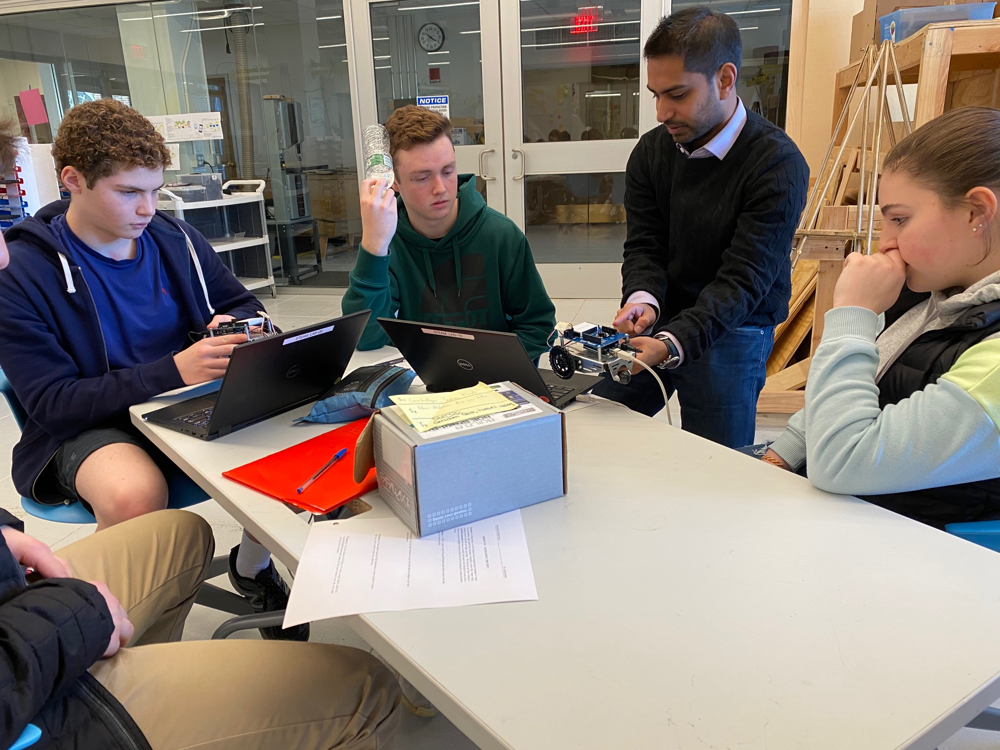
Office Hours
I use my office hours to meet with students not just individually but also in groups. This allows me to have a discussion with them about mathematics and problem solving. It also gives me the opportunity to have students explain work to each other, collaborate and internalize the ideas more deeply without me dictating to them. I have found office hours to be a crucial component of my teaching in terms of developing a culture of learning and exploration.
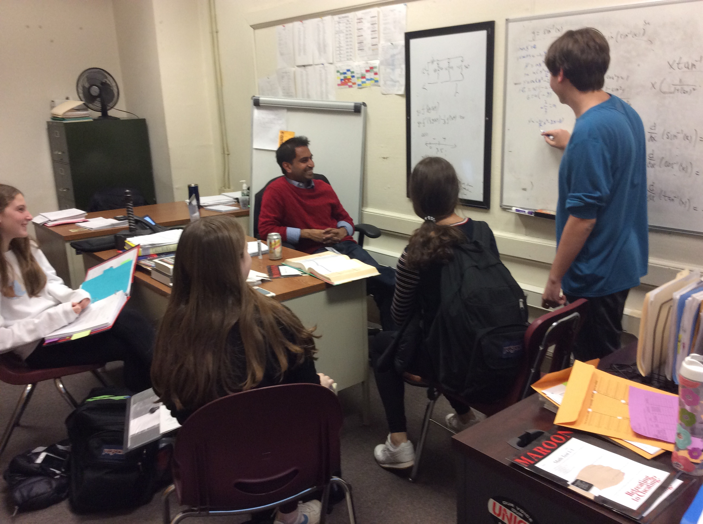 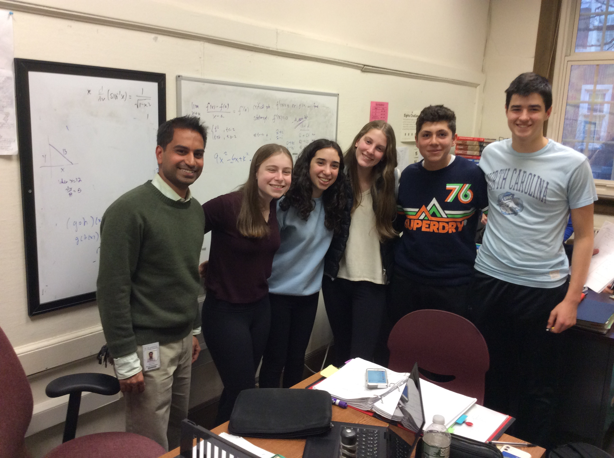
Red, Yellow and Green in Engineering [2021]
As a way to foster more collaboration and independence from the teacher, during the 2021-2022 academic year, I incorporated a new component into my practice. When working on projects in my elective courses (Introductory Engineering, Electrical Engineering, Digital Logic Design), I give each student three colored plastic cups - one red, one yellow and one green. While they are working, one of the cups is to be displayed on their workspace at all times. If they are progressing on their own without the need for help, the green cup should be displayed. If they are having some kind of problem that they are unsure about but is not dentrimental to moving forward, they are to display the yellow cup. When I see a yellow cup, I direct other students (who have a green cup displayed) to go help their classmate troubleshoot their issue. Finally, if they have no ability to progress after troubleshooting on their own or with a classmate, they are to display the red cup, and it is at that point that I go over to help. I have found this system easy to implement and useful in helping students become more independent. It also helps students to work with each other and learn from each other, thereby removing me as the focal point of the classroom and putting them at the center of the learning.
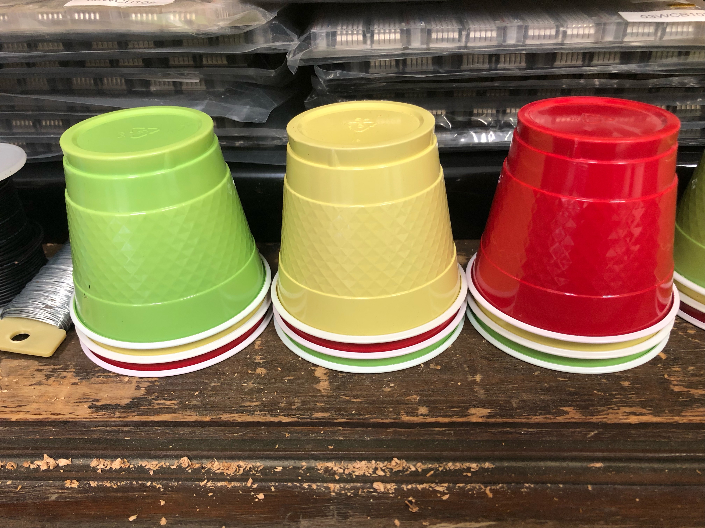 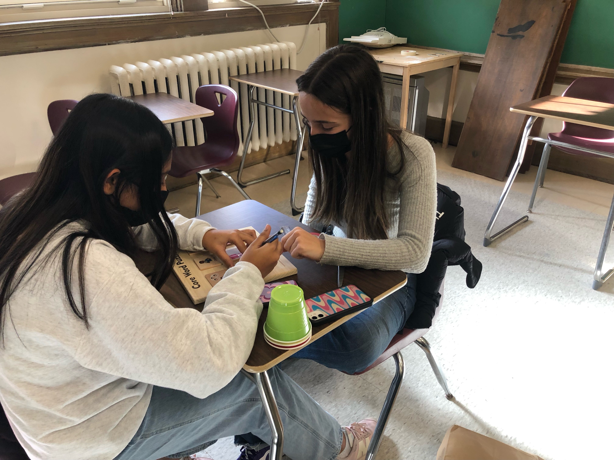 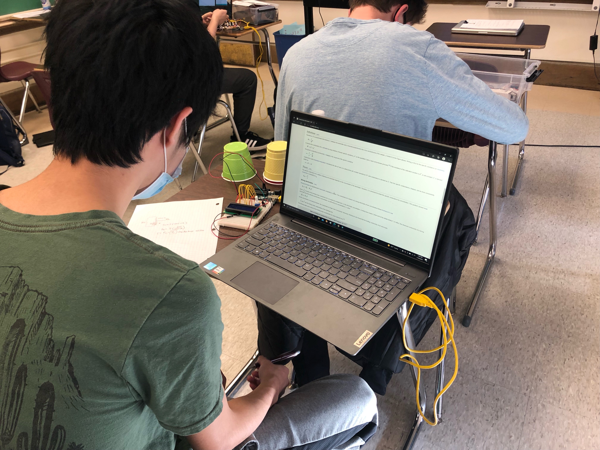